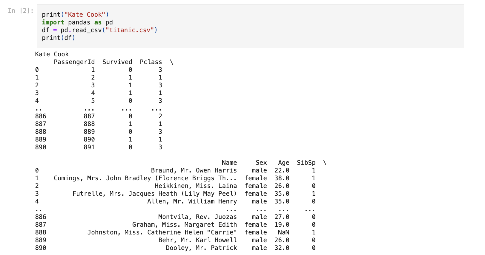

Home
Projects
Contact
NEWS API
API website linked to GNEWS. Site catalogues news articles based on title, number of articles, and keywords.
RESTAURANT-SQL
Created a dataset and SQL queries to create a restaurant design model and program outlining the Data, Schema, and Queries.
SUDOKU GAME
Created a program using javascript that utilizes the rules of sodoku to solve a given puzzle and fill in the unknown values.
TITANIC DATAFRAME
A Titanic dataset is reviewed, inspected to find patterns and trends using Python's NumPy and Pandas package, presented using Jupyter Notebook

PROJECTS